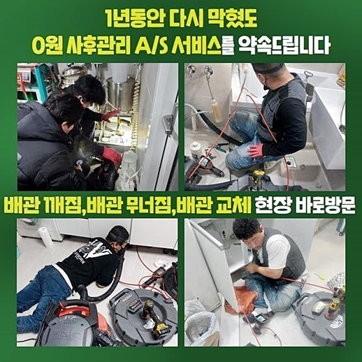
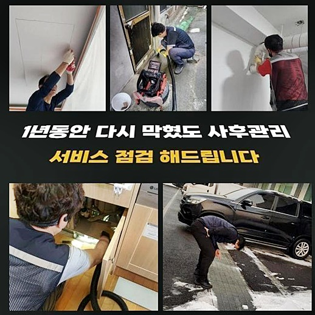
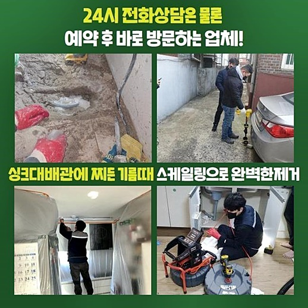
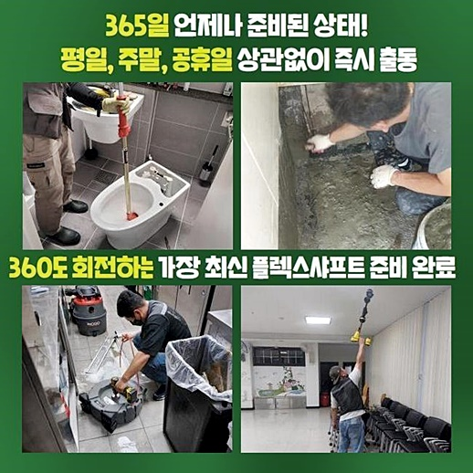
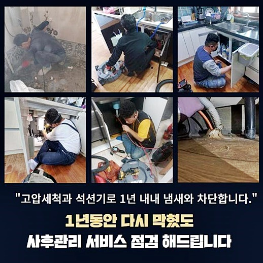
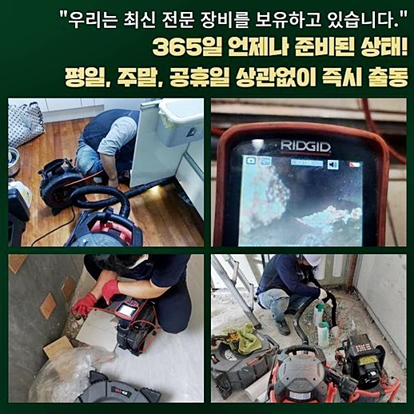
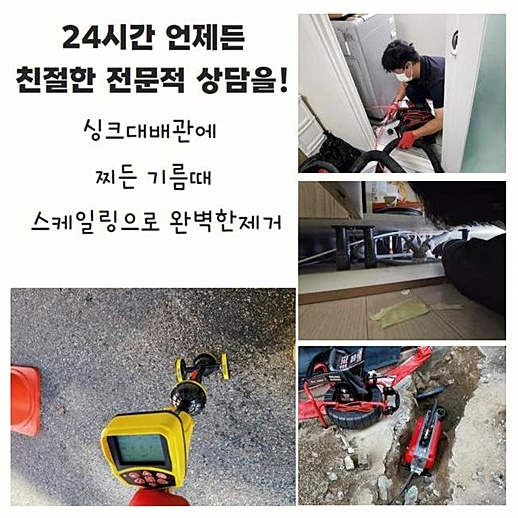

🏠 남촌동싱크대뚫음 원동 배수구뚫기 설비공사
용인시 처인구 배관막힘 전문 시공 후기

📋 작업 개요
- 위치: 용인시 처인구, 수원시 영통구, 화성시 동탄
- 서비스 유형: 배관막힘, 배관수리, 고압세척, 내시경점검
- 작업 일시:
- 업체명: 하수구수사대 (010-5615-2118)
🔍 문제 상황
남촌동싱크대뚫음 원동 배수구뚫기 설비공사
배수파이프 막힘을 관리하는 전문팀으로 정비를 오랫동안 하다보면 세대 내부와 더불어 실외의 장애들도 복구가 필요한 상황이 많습니다
외부의 하수파이프는 폭우가 많이 쏟아지는 등의 기후 변화가 일어나면 오염물이 유입되어 예상치 못한 순간에 막히고 마는 일이 있습니다
이럴 땐 막힘 조짐이 보이지 않아 완전히 생각하지 못한 사태에 부딪히게 되니 빠른 처리가 불가합니다
금일 소개해드리는 하수관로 수리 작업들을 바탕으로 어떤식으로 해결하는지 면밀히 알려드리겠습니다
저희 업체는 하수파이프 막힘을 전문적으로 수년간 하다보니 다양한 상황의 막힘 현상을 거뜬히 처리해드립니다
고객의 요청에 따라 찾아간 곳은 물을 쓸 경우 밖에 위치한 하수배관에서 물이 역류하는 상태였습니다
문제장소에 도착해보니 물이 역류하는 상태를 정확하게 파악할 수 있었습니다
확인을 위해 문제 장소를 조금 파보니 땅속의 배수로가 외형을 드러냈습니다
아직 명확하게 문제들이 드러나지 않았다 해도 하수배관의 한 지점이 깨졌거나 부유물들이 들어갈 수 있는 구멍들이 발생했다고 추측할 수 있었습니다
여러유형의 하수관로 작업을 수행했고 이번 장소와 유사한 케이스도 처리해 본 노하우가 있으므로 전반적인 상황을 예측할 수 있었죠
급하게 처리하려고 주거지 근처의 신뢰할 수 없는 하수배관 수리점이나 설비집 등등으로 전화를 하면 문제요인을 못찾고 금액만 소모할 수 있으므로 조심해야해요
우선 물을 상당량 배출하는 배수시험을 진행하였는데요

🔎 원인 분석
💡 전문가 진단: 정밀 진단 장비를 사용하여 슬러지의 고착 여부를 판명하고 타격/세척 작업을 실시했습니다.
수 많은 물이 계속해서 쏟아져 나오는 현상을 직접 눈으로 확인했습니다
지반을 조금더 파보았더니 거대한 배수설비가 금이 간 것을 확인하였습니다
배수파이프 직경이 큰편이고 많은 양의 토사가 안에 있기 때문에 고치는 것이 만만치 않겠다고 파악하게 된 순간이었네요
저희 하수관로 막힘 기사님은 우선 관로를 탐지하여 내부 상태를 정밀하게 체크해 보기로 하였죠
관로를 탐지하기 위해 배수파이프가 위치한 경로를 찾아 바닥을 더 걷어내는 작업을 실시해 주었습니다
다른 지점에 영향을 주면 안되기 때문에 서서히 신중하게 작업하였는데요
배관 탐지를 통해서 더 파손된 지점이 있는지 알아보았어요
이어져있는 배수관으로 하수관로 내시경 장치를 투입해서 더 손상된 부분들이 있는지를 확인하였는데요
하수관 안쪽에 나뭇가지들과 기름덩어리가 꽉 채워진 상태를 볼 수 있었죠
아무래도 손상된 배수관을 통해 나무의 잔가지들과 불순물들이 유입된 것으로 확인되었어요
예상한것 보다 수 많은 식물줄기들을 보고 약간 당황했지만 확실하게 치워주지 않게 되면 다음번에도 불편의 요인이 되어 하수파이프 작업이 가능한 저희 전문가가 해결책을 드려야 하는 경우였어요
샤프트 장치의 앞부분을 이용해 분쇄하는 방식을 실시하기로 결정하였답니다
식물 덩쿨의 크기가 비교적 커서 세밀하게 분해하지 않는다면 바깥으로 꺼내기가 까다로운 상황이라고 진단했습니다
하수관로 세척을 진행하려면 계속해서 하수파이프 내시경 카메라를 살피면서 청소해야지만 다른 지점에 파손이 발생하지 않아요

🔧 작업 과정
플렉스 샤프트 기기는 관 안쪽의 부유물들과 기름찌꺼기를 성공적으로 부수며 세정 할 수 있는 필수적인 기구예요
믿을 수 있는 하수파이프 막힘 팀이라면 꼭 갖고 있어야 하는 고급 기구라고 생각하시면 됩니다
상황에 맞게 스프링장치를 적용하여 바깥으로 꺼내는 사례도 있어요
스프링장치는 전동력을 사용하여 오염물을 분쇄하거나 바깥으로 방출하는 도구입니다
해당 작업장은 하수관 깊이가 깊고 안쪽의 공간을 확보할 수 없어서 샤프트 장치가 뚫어내는 방법으로 알맞다고 진단을 내렸습니다
초기과정으로 갈아내는 방식을 진행 후 하수파이프 물 흐름이 막힌 안쪽을 재차 검사하였습니다
플렉스 샤프트 기기에 체인을 결합해서 스핀 기능으로 가득찬 찌꺼기들에 갈아내는 방식을 해주었어요
식물줄기들이 생각 이상으로 굵고 많으므로 두꺼운 쇠사슬을 사용해야했습니다
부유물들이 갈리는 소리가 배수관 바깥쪽에서도 확연히 들을 수 있게 크게 발생되었습니다
끼어있는 식물 덩쿨들의 크기가 크기 때문에 갈아내기가 힘들었습니다
석션기기로 흘러넘친 물을 흡입하여 처리한 후 하수파이프를 잇는 작업을 진행했습니다
PVC 재료로 접합하는 시공을 처리하였는데요
PVC 소재는 견고하고 탄력이 있는 편이라 내부용 배수관으로 주로 쓰고 있어요
배수파이프 내시경장치로 다른 지점도 확인해보니 추가적으로 깨진 부분을 발견했습니다
배수파이프 마모는 흔히 동시에 진행되므로 여러지점이 동시에 삭아서 문제가 발생할 수 있어요
하수관로 막힘을 뚫는 저희 기사님이 문제장소에서 시공을 해본 경험으로는 대다수가 그러더군요
발견해 낸 문제 장소를 발굴해보니 가지런히 놓여있는 배수파이프 또한 부서져 있는 것을 파악할 수 있었어요
이곳저곳 노후된 지점이 여러 군데라서 일하는 시간도 길어졌어요
노후된 지점에 복구작업을 실행하지 않으면 고장이 해결되지 않으므로 연결 부속들을 적용하여 보수공사를 완료했습니다
이곳 또한 PVC 하수파이프를 설치했고 결합된 곳에 유격이 없도록 세밀하게 조치하였어요
또 다시 내시경장비로 관내 상태들을 살펴본 후 정상상태라는 판정을 내릴 수 있었습니다


✅ 작업 완료
배수테스트를 시도했습니다
배수관에서 거꾸로 솟구치거나 막히는 일 없이 물이 배수설비로 원활히 흐르고 상부로 물이 스미는 현상도 없어서 배수로가 뚫렸는지 점검 작업을 완료한 후 지면을 잘 덮은 후 시공을 완료했어요
이번 현장처럼 배수로에 충격을 가할 수 있는 시공을 할 때는 꼼꼼한 전문 기술자의 조치가 요구되는 공사입니다 따라서 집에서 수리를 도전해보시다가 막대한 손실들을 초래할 수 도 있어요
장애가 일어났을때 단번에 해결하게 되면 좋을테지만 해결이 힘든 경우 필수적으로 전문가의 지원 받기를 권유 드립니다
하수파이프 막힘으로 장애가 일어났을때 마음편히 저희 전문기사님께 연락을 주시면 됩니다
신속히 찾아가서 명확하고 즉각적으로 문제상황을 처리해 드릴게요




⚠️ 하수구 배관 막힘 예방 및 관리 가이드
- ✅ 머리카락, 비닐, 물티슈 등 물에 분해되지 않는 이물질은 절대 흘려보내지 마세요.
- ✅ 기름기 많은 식기는 설거지 전 키친타올로 먼저 기름때를 닦아내세요.
- ✅ 주기적으로 배수구에 뜨거운 물을 가득 부어주어 유지방 고착을 방지하세요.
- ✅ 작업 후 1년 이내 재발 시 무상 A/S 보증 서비스를 제공합니다.
💡 핵심 정리
- 확실한 장비 작업(내시경 점검 및 샤프트 스케일링)으로 원인을 뿌리 뽑습니다.
- 작업 후 1년 이내에 동일한 부위 재발 시 100% 무상 A/S 서비스를 보장합니다.
- 서울 · 경기 · 인천 전 지역에 24시간 언제든 긴급 출동할 수 있도록 항시 대기 중입니다.
❓ 자주 묻는 질문 (FAQ)
🚨 용인시 처인구 배관막힘 문제로 고민이신가요?
정확한 원인 진단과 확실한 시공으로 재발 없는 해결을 약속드립니다.
24시간 긴급 출동 | 서울 · 경기 · 인천 전지역 | 1년 내 재발 시 무상 A/S